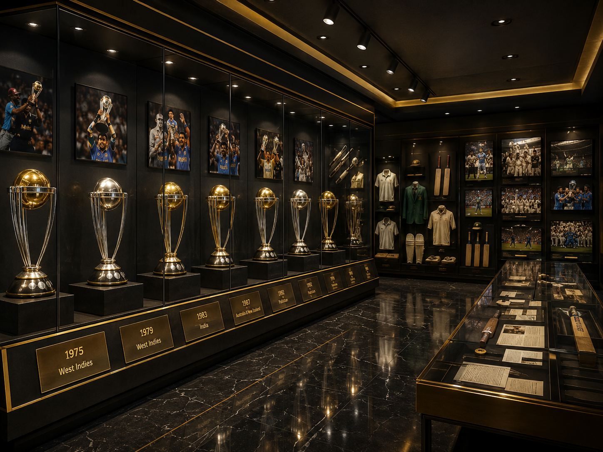
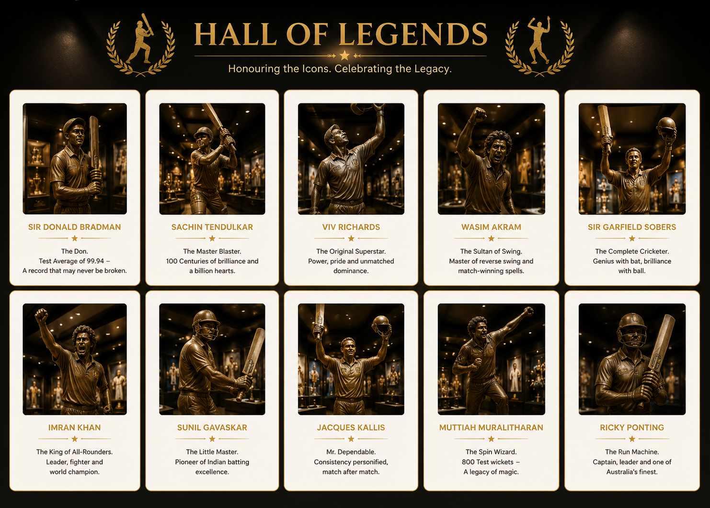
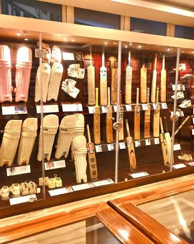
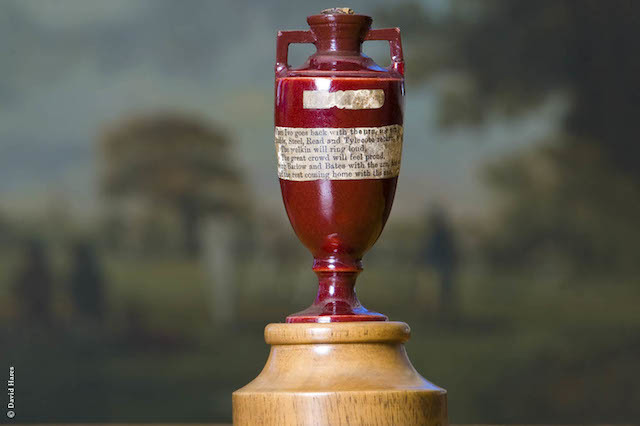
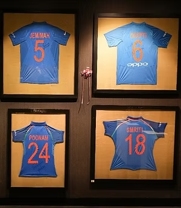
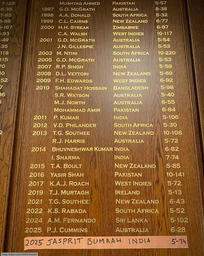
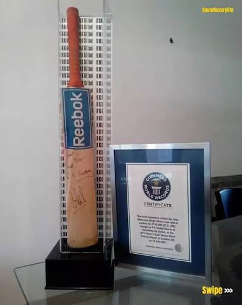

WELCOME TO
CRICKET HERITAGE MUSEUM
& HALL OF FAME
Step into the world of cricket where history, legendary players, iconic
trophies, and unforgettable matches come together under one roof.
ABOUT THE MUSEUM
Preserving Cricket's Greatest Legacy
The Cricket Heritage Museum & Hall of Fame is dedicated to celebrating the rich history of cricket.
From the game's origins in England to unforgettable World Cup victories, our museum showcases rare memorabilia,
historic equipment, legendary players, and the milestones that have shaped cricket into a global sport.
Explore Our Featured Galleries

World Cup Gallery
Relive every ICC Cricket World Cup through trophies, photographs.

Hall of Legends
Meet the greatest cricketers whose extraordinary performances changed the history of the game.

Historic Equipment
Discover vintage bats, leather balls, uniforms, and cricket equipment from different eras.
Museum Highlights




Why Every Cricket Fan Should Visit
Our museum offers an unforgettable journey through cricket's glorious past.
Every exhibit is carefully curated to educate, inspire, and celebrate the legends who made the game extraordinary.
VISITOR STORIES
"The Hall of Legends was my favorite part. Every cricket fan should experience this museum."
-Rahul Sharma
"The World Cup Gallery brought back so many unforgettable memories. Beautifully presented."
-Ben Stokes